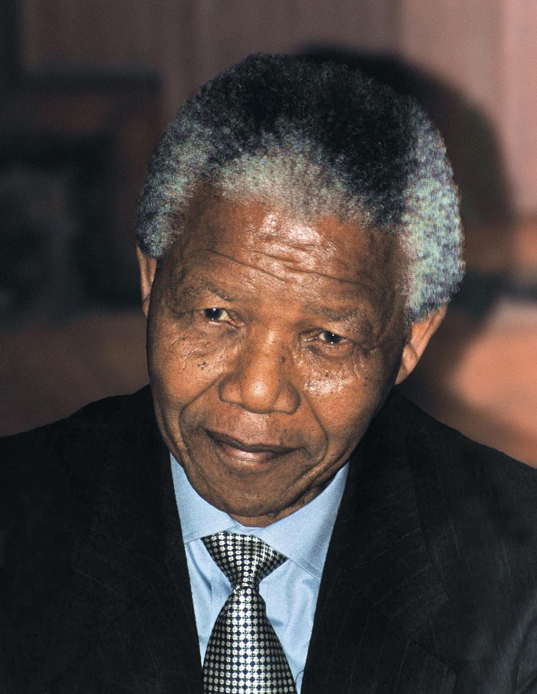

Nelson Mandela
The man who fought for all black people

Nelson Rolihlahla Mandelah, The former president of R.S.A
8 Ways Nelson Mandela changed the world
- 1 From the beginning, Mandela knew that a single person could be a catalyst for change. He
wasn’t afraid to be that catalyst.
Mandela was born in 1918 in a small village in the Transkei, then a British territory in what is now
South Africa. He would go on to lead a nation, change lives, and inspire countless people along the
way. While he was only one man, Mandela shaped a better world through his own initiative.
Mandela formed and joined many organizations and alliances during his lifetime and continues to be a
symbol of the power that one individual has to make a difference. Almost every personal and
professional road he traveled—whether that road meant establishing the first black law firm in South
Africa, forming the African National Congress Youth League, or refusing a pardon due to continued
injustice—was a brave and powerful example of the long journey to freedom.
- 2 - Fewer images in history are more powerful than that of Nelson Mandela, fist raised in a dignified grey suit, walking after his release from 27 years of imprisonment. Mandela was only 44 years old when he was given a life sentence by the apartheid regime for his leadership of the African National Congress, an organization outlawed by the government for its anti-apartheid actions and positions. Mandela was first arrested on treason charges just four years after starting South Africa’s first black law firm and working with others calling for a nonracial state in the country. He would later be acquitted of these charges, only to be arrested yet again in 1962 for his work as a leader within the African National Congress..
- 3 During his trial, Mandela refused to defend himself in order to not legitimize the charges levied against him. In 1985, the government offered to release Mandela under the conditions that he would not engage in political activities once free. Nelson refused. "I cannot and will not give any undertaking at a time when I and you, the people, are not free," he said. "Your freedom and mine cannot be separated."
- 4In the mid-1980s, the world slowly awakened to the suffering of South Africans under apartheid rule. And while Mandela suffered behind bars, his message had never been louder. As anti-apartheid rallies grew, so did awareness of Mandela’s struggle for freedom for black South Africans. His message was so powerful that a protest song named “Free Nelson Mandela,” written and performed by the ska band The Special AKA after attending such a rally, became a top ten hit in the UK, and a legendary anthem worldwide. Mandela’s message was one of peace, justice and freedom, an inclusive campaign that all people could support. He set the precedent for messaging and rallying for future activists to come.
- 5 Founded in 1999, the Nelson Mandela Foundation is the legacy that Mandela has left behind. The organization focuses on what was central to Mandela’s work: justice, dialogue, and social cohesion. Just as Mandela did so successfully in South Africa, the foundation “aims to use the history, experience, values, vision and leadership of its Founder to provide a non-partisan platform for public discourse on important social issues, and in doing so, to contribute to policy decision-making.” The foundation hopes that by providing people and politics with the relevant tools, the public can have informed discussions that lead to justice and freedom for all.
- 6 In 2000, a quarter of South African citizens between the ages of 15- and 45-years old tested positive for HIV/AIDS. In a time and place with four million infected people and incalculable stigma, Nelson Mandela called for bold new measures to be taken in the fight against AIDS. While he regretted not doing enough while he was in office, Nelson Mandela single-handedly set a new agenda for the future fight against HIV/AIDS with a groundbreaking speech in 2000 at an International AIDS conference in Durban. Combined with his public meeting with the revolutionary South African HIV/AIDS activist Zackie Achmat in 2002 and his relentless engagement with the fight through the later years of his life, Nelson Mandela was a devoted advocate for HIV+ South Africans all the way up until his death in 2013.
- 7 Nelson Mandela sought remembrance, rather than revenge, in response to injustices under Apartheid rule. He understood that the key to moving forward as a nation was understanding and learning from its troubled past. That’s why one of Mandela’s first actions as president of South Africa was to set up a Committee for Truth and Reconciliation, a governmental agency dedicated to investigating crimes committed under apartheid from 1960 to 1994. The program is a beacon for human rights volition investigators everywhere, and stands as a shining example as a guide for healing from past atrocities and unifying divided peoples.
- 8 At his core, this was Nelson Mandela’s mission, and its story goes back all the way to his days as a child in that small African village. Ubuntu is the Xhosa idea that there is a oneness to all people. An impenetrable tie that binds us all to one another. A principle stating that conflict amongst people is temporary, only a brief diversion from the natural order of our true nature as human beings: togetherness. Mandela took this belief to heart, and with it shaped the world around him, believing that strength will overcome strife and refusing to be cynical..
“Ubuntu, a word that captures Mandela’s greatest gift: His recognition that we are all bound together in ways that are invisible to the eye; that there is a oneness to humanity; that we achieve ourselves by sharing ourselves with others, and caring for those around us. . . . He not only embodied Ubuntu, he taught millions to find that truth within themselves.” —Barack Obama said during Mandela’s eulogy